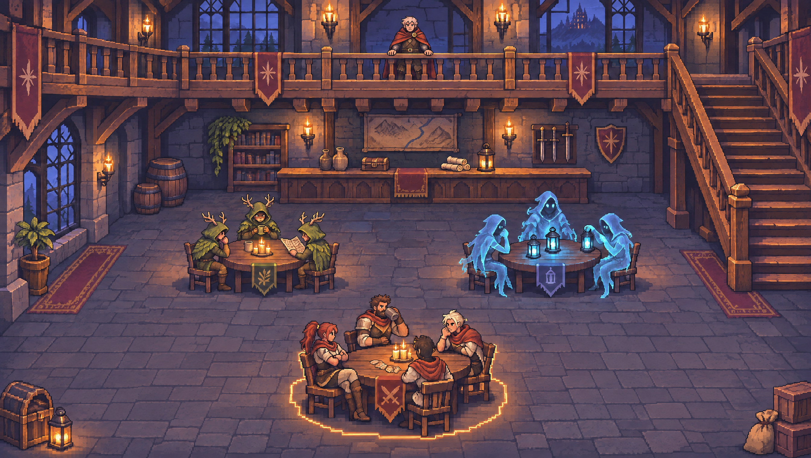
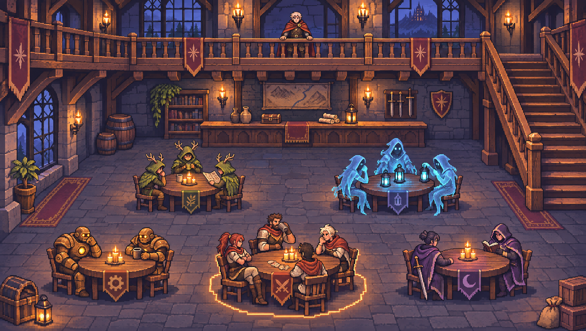
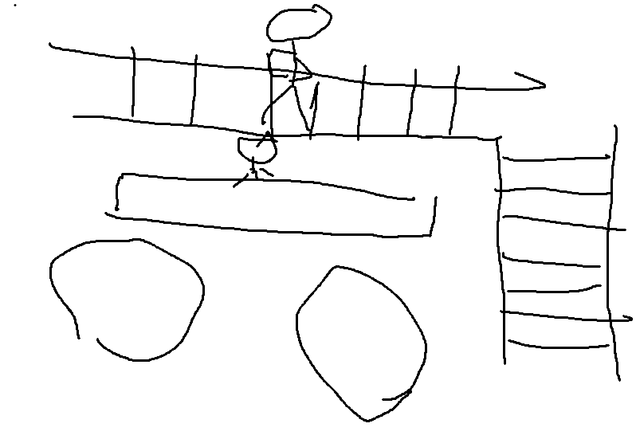

선술집에서 용병 기물 고용
2층 회랑 중앙의 대장이 난간 너머로 1층 고용 홀을 내려다본다. 테이블 하나가 기물 하나의 고용 칸이고, 그 기물을 구성하는 유닛 전원이 같은 원형 테이블에 둘러앉는다.




두 시안은 첨부 스케치를 바탕으로 Higgsfield의 GPT Image 2.6에서 제작했다. 테이블 인원수와 복장은 배치를 확인하기 위한 예시다.
등급별 테이블 배치
| 여관 등급 | 테이블 수 | 배치 제안 |
|---|---|---|
| 1 | 3개 | 뒷줄 두 자리와 앞줄 가운데 |
| 2–3 | 4개 | 앞줄 오른쪽 끝 추가 |
| 4–5 | 5개 | 앞줄 왼쪽 끝 추가 |
같은 카메라와 테이블 위치를 사용한다. 고용석을 선택하면 황동색 바닥 테두리가 테이블과 좌석 전체를 감싼다. 고용이 끝나면 기물의 유닛 전원이 해당 테이블을 비운다.
아트 방향
- 공간. 후면 2층의 긴 난간, 오른쪽 계단, 회랑 아래의 서비스 카운터로 층과 동선을 읽히게 한다. 원형 테이블 사이를 통로로 비운다.
- 기물 구분. 같은 기물은 복장과 주조색을 공유한다. 따뜻한 촛불 아래에서도 이끼족의 뿔, 망령의 푸른 등불, 기계의 넓은 어깨가 구분된다.
- 오토배틀 연결. 선술집 테이블에서 본 유닛의 실루엣과 종족 색을 전투에서도 유지한다. 실제 480×270 화면에서는 다섯 테이블의 간격과 좌석의 가독성을 확인한다.
사용자 스케치
